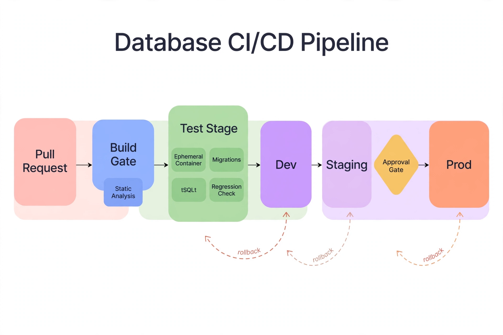

Chapter 23: Database DevOps: CI/CD for SQL Server in the Cloud
Application code ships through pipelines: versioned, reviewed, tested, deployed automatically. Database changes too often ship through a different channel — a DBA running scripts by hand, a shared folder of migration files, a deployment night. The result is the familiar failure: the application deploys successfully and breaks because the database change ran in the wrong order, or twice, or not at all. Database DevOps applies CI/CD discipline to SQL Server schema and programmable objects: every change versioned, reviewed, tested, and deployed through a pipeline. In the cloud — where environments are cheap and automation is the native language — there is no excuse left for manual database deployments.
23.1 State-Based vs Migration-Based Deployments
Two philosophies compete. State-based (declarative): you version the desired end state of the schema (a database project — SSDT/.sqlproj), and the tooling computes the diff and generates the deployment script. Migration-based (imperative): you version an ordered sequence of change scripts (V001, V002, ...), and the tooling applies each exactly once, in order, tracking what has run. State-based is simpler for developers (edit the model, deploy); migration-based gives DBAs explicit control over exactly what runs in production (critical for large tables where the generated diff might choose a table rebuild you would never approve).
The pragmatic answer for most estates: migration-based for production, where control matters; state-based for development environments, where speed matters. Whatever you choose, the non-negotiable rules are identical: every change in version control, every change reviewed, every deployment repeatable and logged.
23.2 The Pipeline: Build, Test, Deploy

Read it left to right: the pull request enters the build gate (static analysis fails fast on the errors a human would catch in review), then the test stage spins up an ephemeral container, runs the migrations, and executes tSQLt unit tests, data-migration validation, and performance regression checks. Promotion flows dev → staging → prod with an approval gate before production — and the dashed rollback arrows are the point: every stage must be able to step back to the previous one. A pipeline that can only move forward is a pipeline that ships outages.
A SQL Server CI/CD pipeline has three stages:
# GitHub Actions: deploy database migrations to Azure SQL
jobs:
deploy-db:
runs-on: ubuntu-latest
environment: production # approval gate lives here
steps:
- uses: actions/checkout@v4
- name: Deploy migrations
uses: azure/sql-action@v2
with:
connection-string: ${{ secrets.AZURE_SQL_CONNECTION }}
path: ./migrations/*.sql
- name: Post-deploy health check
run: |
sqlcmd -S $SQL_SERVER -d appdb -Q \
"EXEC dbo.usp_PostDeployHealthCheck"23.3 Zero-Downtime Schema Changes
The pipeline enables the deployment patterns that keep the business running:
ONLINE = ON for index builds and rebuilds on Enterprise (and increasingly on Standard in recent versions) — the deployment pipeline should default to online operations.23.4 Rollback: The Honest Conversation
Database rollback is harder than application rollback — you cannot un-migrate data. The honest strategies: roll forward (fix the problem with a new migration — the default for most issues); restore (point-in-time restore for data-corrupting failures — accept the data loss since the restore point); and expand/contract discipline (if every change is backward-compatible, the application can roll back independently while the database moves forward). What does not work: assuming down-migrations will save you — they are rarely tested and often wrong. Test the rollback path for the migrations that need it, and prefer designs that do not need rollback at all.
23.5 Environment Strategy: Realistic, Cheap, and Safe
A pipeline is only as good as the environments it deploys to. The cloud makes the ideal cheap: ephemeral review environments (a containerized SQL Server per pull request, seeded with a masked subset of production data — Chapter 20's pattern); staging as a production mirror (same tier, same configuration, restored from a recent production backup — the only environment where performance testing means anything); and production-like data without production data — non-production environments must never hold real customer data. Use data masking (dynamic data masking for live queries, static masking or synthetic generation for restored copies) so a compromised dev environment is an embarrassment, not a breach notification.
Seed strategy matters: an empty database tests nothing. Maintain a versioned seed dataset (representative volume, skewed like production — the query plan that works on 1,000 uniform rows and fails on 10 million skewed rows is the classic CI blind spot). Refresh staging from production backups on a schedule so it never drifts into irrelevance. The environments cost pennies compared to the production incidents they prevent — this is the cheapest reliability investment in the chapter.
23.6 Secrets, Drift, and Compliance
Three pipeline hygiene items: secrets — the pipeline connects with short-lived credentials (managed identities, OIDC federation to the cloud) — never a DBA's personal login baked into a variable; drift detection — someone will change production by hand eventually; a scheduled job that compares production schema to version control and alerts on drift keeps the pipeline honest; and compliance — the pipeline's logs (who approved, what ran, when) are the audit trail for schema changes, which satisfies the change-management evidence auditors ask for far better than tickets and screenshots.
Start small: version-control the next change, add a review step, automate one deployment. The pipeline grows organically from there — but the cultural shift (database changes are code, reviewed and tested like code) has to come first, and it has to include the DBAs, not route around them.
Key Takeaways
Test yourself on this chapter
5 questions · instant scoring · explanations included
QueryOptimizer — Self-Hosted SQL Performance Workbench
Execution-plan visualizer · Index advisor · Slow query dashboard · Built for SQL Server